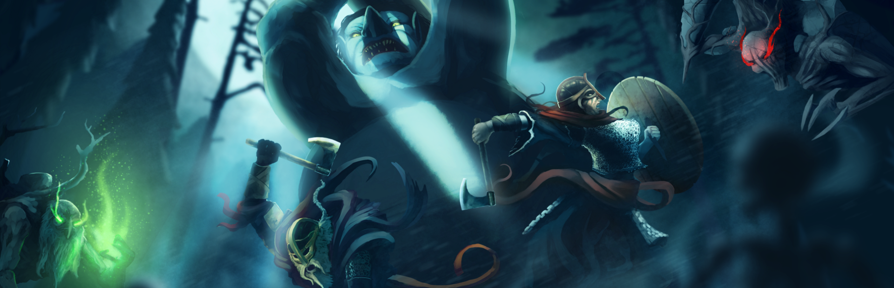

WIKI
ABOUT
MEDIA
VIDEO
SCREENSHOTS
FAQ
Frequently asked questions
Last updated January 18, 2021

General questions
Q: What is Valheim all about?
A: Prove your worth to Odin by helping him reclaim the long forgotten lands of Valheim. Survive in Valheim’s hostile environments by gathering resources, building outposts and farms, and slaying the monsters that stand in your way. Work up your courage and strength to take on the nine Forsaken Ones to free Valheim from their grasp.
Q: Is Valheim built for multiplayer only?
A: No, Valheim can be played either as a singleplayer or a co-op game. But we would of course highly recommend you to play it with a few friends if possible!
Q: Does Valheim have a Sandbox mode?
A: No, it does not. We have discussed adding it though and might do so in the future, if the demand is there.
Q: The visuals of Valheim look kind of old, what is up with that?
A: We have chosen a stylized graphical look that blends low-resolution textures and sparse polygonal detail with modern materials, lighting and post effects. The visuals are inspired by the early days of 3D graphics, like the style seen in PS1 titles and old DOS-era 3D games (before hardware acceleration and texture filtering was a thing).
Q: On which platforms will Valheim be released?
A: Valheim will be released on Windows and Linux via Steam. Adding Mac support and debugging and testing would take a lot of development hours that we don't have at the moment as we prioritize finishing the Windows and Linux versions. We do however get a lot of questions regarding Mac compatibility, so in the future it might be possible to add! As for console release, this is not something we’re considering at the moment, but it might be something we can look at further down the line.
Q: Does Valheim support gamepad?
A: Yes! Valheim fully supports the Microsoft Xbox360 gamepad. It does also support the Xbox One gamepad, due to differing protocols however one or two buttons might have different functionality, but we’re working on it!
Q: Can I customize my in-game ‘stuff’, such as weapons and armor?
A: Some items can be customized, like choosing paint jobs for almost every shield and pick colours on linen capes.. It is quite possible there will be more possibilities for customizing all sorts of stuff in the future but right now we’re focusing on the mechanics and general contents of the game.
Q: Can I customize the appearance of my viking?
A:The Player character is fully customizable with the choice of two body types and a number of different hairstyles, beards, and complexions
Q: Will I be able to use mods?
A: We won’t have official support for mods.
Q: What happened to the Itch.io version of Valheim?
A: The ancient Itch.io (Alpha) release of Valheim has been removed from the Itch.io site due to it not really reflecting the state of the game any longer. If you are in possession of the Itch.io version you are free to share it as you wish, but we won’t be providing any support for it going forward.
Q: Do you still accept donations for the development of Valheim?
A: We have signed a publishing agreement with Coffee Stain Publishing and will therefore no longer accept monetary donations. Chocolate and other sweets are still welcome :)
Q: How much does the game cost?
A: The game costs €16,79 on Steam
Q: Why is Valheim available for early access?
A: We want to make the best game we can, and even in beta we’ve learnt that working directly with our community is the best way to do that. Valheim is a huge world and we have lots that we want to add, and Early Access is a way for us to receive constant valuable feedback, collaborate with our players on what they want to see, and keep our players in mind at every step of the development cycle.
Q: For how long will Valheim be in early access?
A: For at least one year, but depending on player feedback and the amount of content we choose to put into the final game, it may take longer.
Gameplay questions
Q: Is there a lot to explore in Valheim?
A: Valheim is a vast procedurally generated world with many different biomes. Every biome has its own challenging environment, enemies and secrets to discover. Travel through deep forests, through harsh snowstorms in the mountains or sail the high seas if you dare. If you’re not the outdoorsy type, there are plenty of dungeons, crypts and caves for you to explore as well.
Q: Valheim sounds very big. What other means are there to travel other than running?
A: You can craft three different types of boats to use for sailing from place to place, as well as portals that can take you wherever you want.
Q: How does crafting work?
A: You can build many different workbenches and crafting stations like kilns, smelters and windmills that you can use for refining raw materials. Use the materials you have gathered to craft an array of different armors, weapons and tools. You can also build boats and bases.
Q: Can I build my own bases from the ground up?
A: Yes! We have a robust construction system where you can choose from different types of floors, walls, roofs and furnitures to build and decorate your base in any way you might want. Our Beta testers have built anything from little fishing villages to enormous castles. What do you want to build?
Q: Do you eat in Valheim?
A: There are many types of food in Valheim, from mushrooms and berries to pies and fish wraps that all come with different attributes. Eating food is not vital for survival in Valheim, but your total health and stamina depends on it. You are able to cultivate the grounds around your base to farm your own materials, and you can tame animals and keep them in pens to later use their meat.
Q: What does the progression look like in Valheim?
A: Every biome comes with its own difficulty and unique resources for crafting armor and weapons. To conquer a biome you have to defeat its corresponding Forsaken One in a brutal boss battle, then use your newly gained items and skills to move on to the next one. Defeat all the Forsaken Ones and conquer their lands to carry out Odin’s mission.
Q: I’ve found a bug in the game, how can I report it?
A: Please visit
https://valheimbugs.featureupvote.com/
and see if someone else has had the same problem as you. If so, upvote their post! If not, you can submit your bug in a new ticket.
Q: Where can I leave suggestions for the game?
A: We collect all player suggestions in our discord server:
https://discord.com/invite/valheim
There you can find the channel labeled #suggestions, and you can tell us about your idea by following the rules stated in the channel.
Multiplayer questions
Q: Is there any PVP in Valheim?
A: Although the main focus of Valheim is PVE, we support consensual PVP. Players that wish to bash each other over the head have to turn on the PVP setting from the Inventory-screen.
Q: Is there any in-game communication in Valheim?
A: Valheim supports in-game chat, but you’ll have to use dedicated software such as Discord or TeamSpeak for voice communication.
Q: How many Players can play at the same time?
A: Valheim is a co-op game meant to be played with a couple of friends, servers are capped at 10 players.
Q: How does a multiplayer-server work?
A: When starting the game you can create your own p2p-based play session that can be either public or private, Iron Gate does not provide any official servers. If you wish to run a persistent server you can download the Valheim Dedicated Server-application from Steam.
Iron Gate Questions
Q: Tell me a little about yourselves!
A: Iron Gate is a small company operating out of Sweden. Currently the company consists of four full-time employees and one part-time consultant, with the ambition to expand the team over the long run. We have the ambition to focus primarily on development internally, with all employees being part of the production staff (our CEO is the main programmer, as well as creator of Valheim). Our publishing partner Coffee Stain Publishing helps us with many aspects of the business such as marketing and other business stuff.
